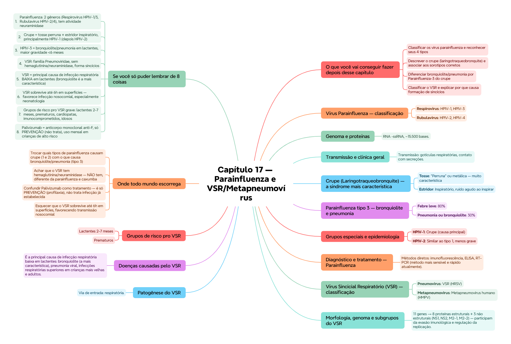

ClinicusMed · Dossiê Clinicus — Padrão de Excelência
Família Paramyxoviridae, subfamília Paramyxovirinae.
| Gênero | Tipos |
|---|---|
| Respirovirus | HPIV-1, HPIV-3 |
| Rubulavirus | HPIV-2, HPIV-4 |
4 tipos infectam humanos: Parainfluenza 1, 2, 3 e 4. Os mais associados a doença clínica significativa: 1, 2 e 3.
RNA -ssRNA, ~15.500 bases. Proteínas: NP, P, M, F, HN, L. Antígenos neutralizantes: HN e F — fundamentais tanto pra entrada viral quanto pra resposta imune protetora.
Patogênese: replicação no epitélio respiratório. Infecções possíveis: rinite, faringite, laringite, bronquiolite, pneumonia. A infecção se limita principalmente ao trato respiratório, mas pode progredir pras vias inferiores, especialmente em lactentes.
Transmissão: gotículas respiratórias, contato com secreções. Muito frequente em crianças pequenas.
Sintomas inespecíficos: tosse, rouquidão, febre, dificuldade respiratória — obrigam diagnóstico diferencial com influenza, VSR e adenovírus.
Fisiopatologia: inflamação e edema na região subglótica (abaixo das cordas vocais) → estreitamento da via aérea, dificultando a passagem do ar.
| Achado | Detalhe |
|---|---|
| Tosse | "Perruna" ou metálica — muito característica |
| Estridor | Inspiratório, ruído agudo ao inspirar |
| Outros | Rouquidão, febre leve a moderada, dificuldade respiratória em casos graves |
Causa mais frequente: vírus parainfluenza, especialmente tipo 1 (causa principal), seguido do tipo 2. Outras causas possíveis: VSR, influenza, adenovírus.
Faixa etária: 6 meses a 3 anos, podendo ocorrer até os 5 anos.
| Infecção primária | Frequência |
|---|---|
| Febre leve | 80% |
| Pneumonia ou bronquiolite | 30% |
Maior gravidade em <6 meses. O HPIV-3 é especialmente importante em lactentes, causa relevante de hospitalização. Imunidade local é chave — reinfecções são frequentes, mas geralmente mais leves.
Sintomas: febre, tosse, dificuldade respiratória, taquipneia, sibilância, congestão nasal, fadiga.
Bronquiolite (típica do tipo 3): retrações intercostais, respiração rápida, sibilância marcada, hipoxemia em casos moderados/graves.
Imunocomprometidos: infecções prolongadas, maior gravidade, HPIV-3 mais frequente. Comum em pacientes com câncer, transplantes ou HIV.
Transmissão: gotículas, contato direto. Incubação: adultos 3-6 dias, crianças 2-4 dias. Os vírus não sobrevivem muito tempo no ambiente, mas são altamente contagiosos por contato próximo.
| Tipo | Importância clínica |
|---|---|
| HPIV-1 | Crupe (causa principal) |
| HPIV-2 | Similar ao tipo 1, menos grave |
| HPIV-3 | Pneumonia e bronquiolite |
| HPIV-4 | Infecções mais leves |
Infecções nosocomiais: especialmente HPIV-3, unidades pediátricas, risco em neonatos.
Métodos diretos: imunofluorescência, ELISA, RT-PCR (método mais sensível e rápido atualmente). Amostras: aspirado/lavado nasal. Sorologia (inibição de hemaglutinação, fixação do complemento, neutralização): valor limitado pela reatividade cruzada.
Tratamento: sintomático, umidificação, epinefrina inalada (no crupe), sem antivirais específicos.
Prevenção: não há vacina licenciada — vacinas inativadas pouco efetivas, vacinas intranasais atenuadas ainda em investigação (desafio: induzir imunidade mucosa eficaz).
Família Pneumoviridae (antes incluído dentro de Paramyxoviridae). Genoma RNA -ssRNA, envelopado.
| Gênero | Vírus |
|---|---|
| Pneumovirus | VSR (HRSV) |
| Metapneumovirus | Metapneumovírus humano (HMPV) |
11 genes → 8 proteínas estruturais + 3 não estruturais (NS1, NS2, M2-1, M2-2) — participam da evasão imunológica e regulação da replicação. Não possui hemaglutinina nem neuraminidase (diferencial importante em relação à parainfluenza e caxumba).
Subgrupos: um único sorotipo, dois subgrupos antigênicos A e B. O subgrupo A geralmente se associa a doença mais grave. Ambos podem circular simultaneamente durante epidemias.
Via de entrada: respiratória. Replicação no epitélio respiratório superficial → disseminação pro trato respiratório inferior (por aspiração de secreções e propagação epitelial).
Incubação: 3-5 dias. Transmissão: contato direto, fômites contaminados. O VSR sobrevive até 6 horas em superfícies — explica a alta taxa de infecções nosocomiais, especialmente em neonatologia.
É a principal causa de infecção respiratória baixa em lactentes: bronquiolite (a mais característica), pneumonia viral, infecções respiratórias superiores em crianças mais velhas e adultos.
Manifestações: rinorreia, tosse, faringite, febre, laringotraqueobronquite, bronquiolite, pneumonia. Em lactentes pequenos, o diâmetro reduzido dos bronquíolos favorece quadros graves.
Nesses grupos, a evolução pode ser rápida e severa.
Imunidade: celular (linfócitos T citotóxicos), IgA secretora (proteção local), IgG sérica (proteção parcial e não duradoura). A reinfecção é frequente porque a imunidade não é completamente protetora.
Epidemiologia: principal causa de hospitalização respiratória pediátrica, reinfecta crianças mais velhas e adultos, alta frequência de infecções hospitalares. Maior impacto em populações de baixo nível socioeconômico.
Sazonalidade: climas temperados — outono/inverno/primavera. Trópicos — variável, às vezes na estação chuvosa. Surtos anuais no final do inverno/início da primavera.
Amostras: aspirado/lavado nasofaríngeo. Métodos: imunofluorescência, ELISA, RT-PCR (método de escolha, mais sensível que cultivo/detecção de antígenos). Sorologia: neutralização, fixação do complemento, ELISA IgG/IgM — requer aumento ≥4x nos títulos, útil principalmente em estudos epidemiológicos.
Ribavirina (aerosol): uso limitado, risco de anemia, só em casos graves selecionados. Suporte clínico: oxigênio, hidratação, ventilação. Não há antivirais específicos amplamente eficazes.
| VSR | Parainfluenza (VPI) | |
|---|---|---|
| Idade mais afetada | Lactentes <1 ano, especialmente <6 meses | 6 meses-3 anos (pode afetar qualquer idade) |
| Síndrome predominante | Bronquiolite (sibilância, taquipneia, retrações) | Crupe (tosse perruna, estridor inspiratório, rouquidão) |
| Febre | Baixa ou moderada | Variável, às vezes moderada-alta |
| Tosse | Sibilante, persistente | "Perruna" |
| Estridor | Raro | Comum no crupe viral |
Vamos acompanhar a bebê Alice, 3 meses, prematura, com dificuldade respiratória progressiva. O caso evolui em 3 níveis — clica em cada um pra ver como as coisas vão se desenrolando.
Visão geral do capítulo em formato visual — ideal pra revisão rápida antes da prova. O conteúdo completo, com explicações e exemplos, está no Guia de Estudo.

O sistema guarda, no seu navegador, quais cards você já sabe bem e quais precisam voltar mais cedo — cada vez que você avalia um card, ele recalcula quando ele deve voltar.
10 questões, do mais básico ao mais puxado. Escolhe uma alternativa, depois clica em "Ver comentário completo" — vale a pena ler até quando você acerta, porque o comentário explica cada alternativa, não só a certa.